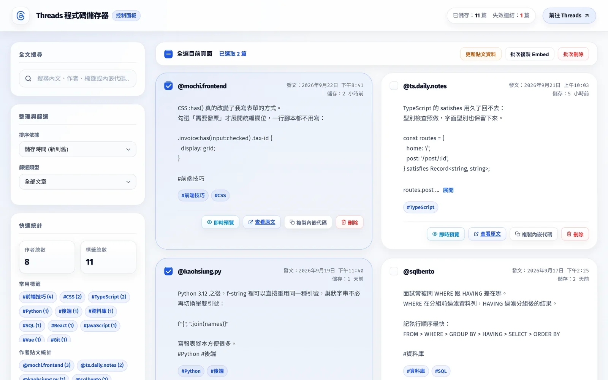
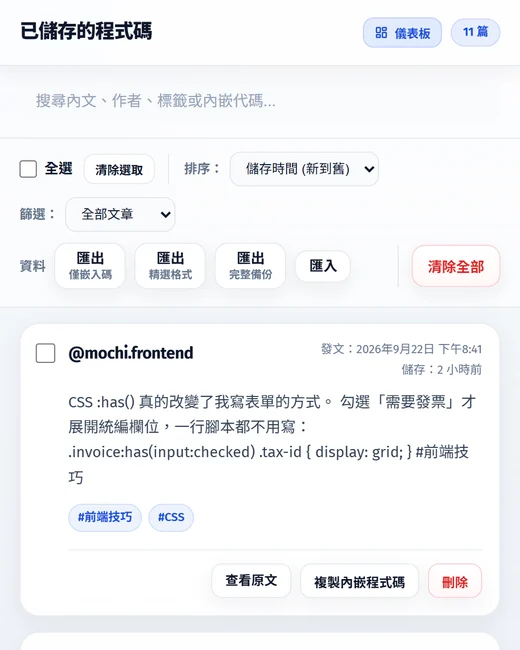
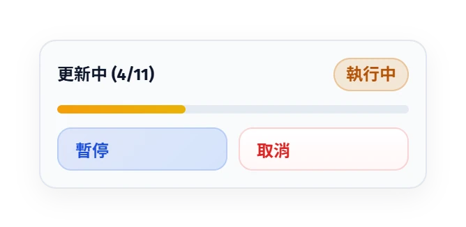
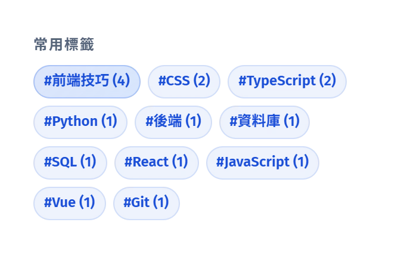
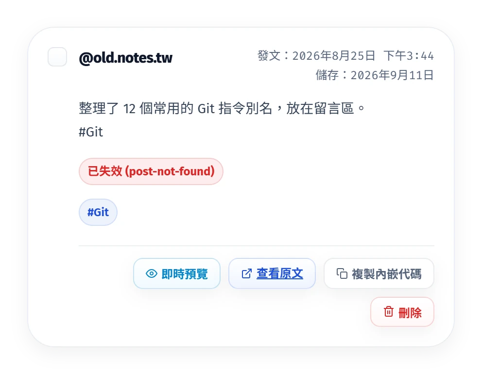

不離開面板就能預覽
以 Threads 官方的 658px 寬度載入原生卡片，高度自動貼合內容；也能切到「原始碼與中繼資料」。用 ← → 換篇，Esc 關閉。
免費開源的 Chromium 擴充功能
在 Threads 貼文選單點「取得內嵌程式碼」，內嵌碼、內文、作者與發文時間就自動存進你的瀏覽器，隨時預覽、整理、匯出。


Threads 本來就有「取得內嵌程式碼」。擴充功能只在旁邊等著，對話框一出現，就把整篇貼文記下來。
在貼文右上角的「⋯」選單點「取得內嵌程式碼」，就是平常嵌入貼文的步驟。
從對話框挑出完整的 <blockquote> 內嵌碼，再擷取內文、作者、發文時間與標籤，順手濾掉介面文字。
寫入 chrome.storage.local 並跳出「內嵌程式碼已儲存」。之後從工具列的彈出視窗或全頁控制面板都找得到。
互動示範
按鈕、粉絲數與相對時間，常會混進擷取結果。這裡直接執行擴充功能 content.js 裡的清洗函式，改動原始文字，清洗結果會即時更新。
這裡示範的是文字清洗階段。實際擷取時，擴充功能會先在頁面結構中排除時間標籤、作者連結與回覆區塊，再交給這一步處理。 查看 content.js 原始碼
工具列的彈出視窗適合快速查找，全頁控制面板負責預覽、批次處理與統計。
以 Threads 官方的 658px 寬度載入原生卡片，高度自動貼合內容；也能切到「原始碼與中繼資料」。用 ← → 換篇，Esc 關閉。
重複使用同一個背景分頁依序載入，不會一次開一堆分頁。可以暫停、繼續或取消，每處理完一篇就立刻寫回。

刪除、批次刪除與清除全部之後，8 秒內按「復原」就還原。
統計最常出現的 15 個標籤與作者，點一下就篩選，再點一次取消。

被刪除、轉私密或轉址的貼文會標成失效並記下原因，恢復後自動解除。

批次更新、複製 Embed 或刪除；三種匯出也只會帶走勾選的貼文。沒勾選時，這些按鈕保持停用，鍵盤也按不到。
對話框會鎖定焦點，關閉後回到原本的按鈕；通知會被螢幕閱讀器念出來，也尊重「減少動態效果」設定。
全文搜尋會比對內文、作者、標籤與內嵌碼。找出沒有內文、沒有發文時間或已失效的貼文，集中處理。
有勾選就只匯出勾選的貼文，沒勾選就匯出目前篩選後的清單。三種格式都是能直接引用的 JavaScript 檔；每段內嵌碼附帶的 <script> 會先移除，網頁只需載入一次 embed.js。
const posts = [
'<blockquote class="text-post-media" data-text-post-permalink="https://www.threads.com/@mochi.frontend/post/DQx7mK2pLsA" …>…</blockquote>',
'<blockquote class="text-post-media" data-text-post-permalink="https://www.threads.com/@ts.daily.notes/post/DQv3Rn8eTqB" …>…</blockquote>'
];const posts = [
{
"embedCode": "<blockquote class=\"text-post-media\" …>…</blockquote>",
"postLink": "https://www.threads.com/@mochi.frontend/post/DQx7mK2pLsA",
"author": "mochi.frontend",
"content": "CSS :has() 真的改變了我寫表單的方式。\n勾選「需要發票」才展開統編欄位…",
"tags": [
"前端技巧",
"CSS"
]
}
];const posts = [
{
"embedCode": "<blockquote class=\"text-post-media\" …>…</blockquote>",
"postLink": "https://www.threads.com/@mochi.frontend/post/DQx7mK2pLsA",
"author": "@mochi.frontend",
"content": "CSS :has() 真的改變了我寫表單的方式。\n…",
"timestamp": "2026-09-22T12:41:00.000Z",
"timestampTitle": "2026年9月22日 下午8:41",
"savedAt": "2026-09-23T09:02:17.000Z",
"tags": [
"前端技巧",
"CSS"
],
"status": "active",
"expiredAt": "",
"expiredReason": "",
"expiredCheckedAt": ""
}
];匯入也支援 .js 與 .json，彈出視窗還能直接貼上檔案內容。選「合併」只會加入尚未存在的貼文；選「完全覆寫」前會再確認一次，按 Esc 一律視為取消。
沒有伺服器、沒有帳號，也不收集使用紀錄。你存下的貼文只寫進本機，不會被傳到任何地方。
storagechrome.storage.local，所有貼文都存在這裡。tabsscriptingthreads.comthreads.netscript-src 'self'frame-src對話框裡可能同時有純連結和完整內嵌碼。每個唯讀欄位依內容加權，分數最高的就是帶 data-text-post-permalink 的 blockquote。
let score = value.length;
if (/data-text-post-permalink=/i.test(value)) score += 1000;
if (/<blockquote/i.test(value)) score += 500;
if (/threads\.com/i.test(value)) score += 100;節錄自 content.js 的 extractEmbedCodeFromDialog
只保留沒有被其他候選容器包住的最外層容器，再用 innerText 輸出。段落與 <br> 換行都留著，子節點也不會重複擷取。
const topContainers = beforeReply.filter(el =>
!beforeReply.some(other => other !== el && other.contains(el))
);節錄自 content.js 的 extractContentFromDOM
每一輪先檢查取消與暫停，再用同一個背景分頁載入下一篇。處理完就寫回儲存區，中途關掉頁面也不會遺失已完成的部分。
for (const article of articlesNeedingUpdate) {
if (cancelUpdateRequested) break;
while (isUpdatePaused && !cancelUpdateRequested) {
await new Promise(resolve => setTimeout(resolve, 150));
}
const tabId = await getOrCreateWorkerTab();
const postInfo = await fetchPostInfoWithReusableTab(tabId, article.postLink);
// 失效就標記原因，恢復就清除標記，接著寫回 chrome.storage.local
}簡化自 dashboard.js 的背景更新流程
Threads 的內嵌頁不會回報高度，所以 content.js 也注入預覽框架，量到 .Embed 高度後用 postMessage 回傳。控制面板只接受官方網域的訊息。
function isAllowedEmbedOrigin(origin) {
if (!origin) return false;
try {
const url = new URL(origin);
const hostname = url.hostname.toLowerCase();
const allowedDomains = ['threads.net', 'threads.com', 'instagram.com'];
return allowedDomains.some(domain => hostname === domain || hostname.endsWith('.' + domain));
} catch (_) {
return false;
}
}摘自 dashboard.js
安裝
以「載入未封裝項目」的方式安裝，支援 Manifest V3 的 Chromium 瀏覽器都能使用。
用 Git 複製專案，或下載 ZIP 後解壓縮。
git clone https://github.com/Scorpio-meow/Threads-embedded-code.git
在網址列貼上下面的網址；Edge 請改用 edge://extensions/。
chrome://extensions/
切換頁面右上角的「開發人員模式」開關。
點「載入未封裝項目」，選取含有 manifest.json 的專案資料夾，再把「Threads 程式碼儲存器」釘選到工具列。
先確認已登入 Threads，未登入時官方對話框可能產生不了內嵌碼；網址也要是 threads.com 或 threads.net。如果開發者工具出現「Extension context invalidated」，代表擴充功能剛重新載入過，重新整理 Threads 頁面就會恢復。
背景更新時，如果貼文被刪除、帳號轉為私密、頁面不存在或網址被轉導，就會標記為失效並記下原因，例如 post-not-found 或 redirected。之後只要貼文恢復可讀，下次更新就會自動解除。
擷取依賴 Threads 網頁的結構與 class 名稱，官方大幅改版時可能暫時失效。請到 GitHub Issues 回報，維護者會更新 content.js 裡的選擇器。
chrome.storage.local 的預設配額是 10MB，依內容長短大約能放數千篇。空間不足時會跳出提示，建議定期匯出完整備份，再清掉不需要的舊貼文。
刪除、批次刪除與清除全部都能復原：畫面下方的提示會出現「復原」按鈕，8 秒內按下就還原。提示消失後就無法復原，所以清空前建議先匯出完整備份。
不會。貼文只存在瀏覽器的 chrome.storage.local，擴充功能沒有自己的伺服器，也沒有任何追蹤或統計。需要連網的只有 Threads 相關功能（官方內嵌預覽與背景更新），以及介面使用的 Google Fonts 字型。
需要能安裝擴充功能的桌面版 Chromium 瀏覽器，例如 Chrome、Edge、Brave、Opera 或 Arc。